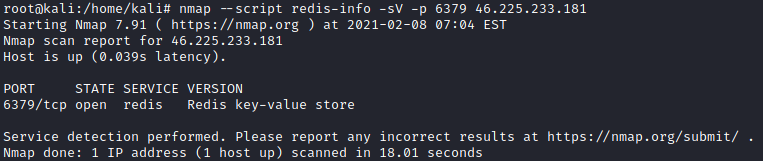
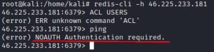
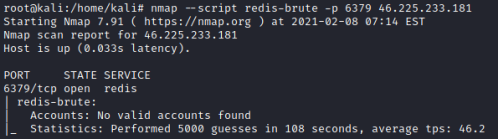

Redis
Redis like MongoDB is another NoSQL database
Redis Server TCP port:
6379
Obtain informationsNSE script:
https://nmap.org/nsedoc/scripts/redis-info.htmlmetasploit
script:
https://www.rapid7.com/db/modules/auxiliary/scanner/redis/redis_server/
root@kali:/# nmap --script redis-info -sV -p 6379 <IP>
msf> use auxiliary/scanner/redis/redis_server
Connect
nc -vn <IP>
redis-cli -h <IP> #sudo apt-get install redis-tools
 this means that we need
valid credentials to access the Redis instance.
BruteforcingRedis databases are
particularly
good targets for brute-force attacks because of their
improved high-speed access. Even when password-protected, Redis databases allow for thousands of password attempts
per second. Because of that make sure to
generate a strong and very long
password so that this attack is infeasible.(Source:
Redis manual)
msf> use auxiliary/scanner/redis/redis_login
root@kali:/# nmap --script redis-brute -p 6379 <IP>
root@kali:/# hydra –P /path/pass.txt <IP> redis
If we have found
valid credentials we can connect with the Redis instance with redis-cli and authenticate the session with:
IP> AUTH <username> <password>
Valid credentials will be responded with: +OK
Bibliography:
https://book.hacktricks.xyz/pentesting/6379-pentesting-redishttps://book.hacktricks.xyz/brute-force#redis